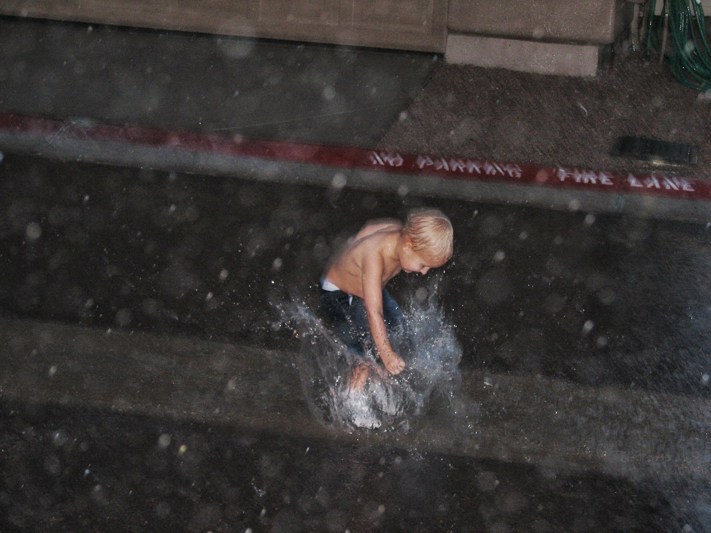

Recovered weblog entry
Trade-offs
The monsoon storms seem to have abated for the time, and the temperatures have soared right back up into the unbearable zone. I knew I should have enjoyed the cooler weather while it was here. Though there was a day about a week ago when we had a freakish amount of rain in a short time span. I told Sumner to go enjoy it. He had a blast! Too bad daddy had to stand back and take the pictures though. That's always the trade off: enjoy the moment or archive the memories. I chose the latter.

I came the the conclusion earlier tonight that I ought to enjoy my time more fully. Whatever predilection I was endowed with that provides me with reactionary statements such as "I'm so busy" must be stopped, at all costs! I'm tired of feeling busy. In fact, it's about time I figured out that I'm not busy, really...not at all. 24 hours in a day is a lot of time to enjoy.
Oh sure, I can be genuinely busy at times. But it seems that we humans feel like an absolute waste when we aren't actively engaged and able to respond as such. Trouble is, some of the activities we occupy ourselves with is pure garbage that is best left alone. Time could be better spent with family and friends.
It's wonderfully healing doing nothing every once in a while. Perhaps if we spend a little more time unwinding and meditating, we can find ourselves in a better position to tackle the demons that appear throughout the week. Maybe that's the reason why I do this blog...I don't feel obliged to do it, I just write because I love to do it. It lets me reflect a bit more on the environment around me and the way that I am connected to it. Believe me, the employment that I choose does not, in the grand scheme of things, make a bit of difference. So then why do I spend so much of my time at home preoccupied with the generalities of the function? Rather, my time could be better spent.
The people I talk to at work, the relationships I forge, the words I speak and listen to...those matter a great deal to both me and others. And I don't think I give those special moments enough consideration in my life. My job itself matters only as it is a vehicle for me to provide service to others.
We spend too much time working as it is. Do I really want a job where I work 65 hours/week? No. I assert that it must not be that way now, nor must it ever become that way. They say that no success in the professional life can compensate for failure at the home front. I think that can be applied to other areas of life, as well. Work is what sustains us, gives us our daily bread and provisions for our family. It is not meant to be a replacement for or a threat to the main functions of our life, which are family, love, friendship, meditation, and education.
I'm not sure where I'm going with this. I certainly didn't intend to end up there when I began, that's for sure. But I'll leave it as is.
Last weekend went off pretty well, with the wife celebrating her 23rd birthday on Friday. Late Thursday night, I inflated 75 balloons while watching The Simpsons. To my amazement, I didn't really become lightheaded. But by the end of the third bag of balloons, I felt that my lips were burning fiercely, and it was then I remembered my allergy to latex. Hmm. Latex balloons might not mix well with me, then. At least not 75 of them.
So I had a bit of a reaction. I envisioned my poor wife waking up next to Lips Manliss on the morning of her birthday, with all me being able to say was a muffled "Mabby Burbfday". Or something to that extent. But the swelling went down and by Friday morning, I was back to my normal self again. I cooked up my special breakfast of Sourdough French Toast w/ turkey sausage, but was completely disappointed in myself that I forgot to get the OJ.
After work that day, we went to a birthday favorite, Claim Jumper. I swear those folks could cook a tennis shoe in motor oil and not only make it taste great, but present it to you in such a way as to make you believe it to be top sirloin. I had the pepperoni pizza, the wife had the spinach salad. We both shared a pretzel at the beginning, and the complimentary and obligatory massive slice of ice cream at the end. Dinner done right, I tell you.
Saturday brought an influx of friends to the casa, arriving one after the other to enjoy a night of Wii Sports, Excite Truck, DiRT, and Mario Kart. When we all get together, the best thing seems to be the Wii Bowling, though playing that game mirrors the real thing all too well. I play superb at the beginning, and end the night on a terrible note. I'd say practice makes perfect, but I have better things to do.
So there you have it, life as I know it up to this point. Who knows what tomorrow may bring. I do know that we are most certainly leaving for Utah on the 28th. Weather.com says the average high will be around 83 degrees. I say Arizona will be hard to come home to.